Vue: seguindo em frente
Mais sobre componentes
Veremos agora, como inserir dados nos componentes, no formato de objetos e como alterar dados dinâmicamente destes componentes numa página.
Para iniciar, vamos alterar o código criado na aula passada quando programamos nosso primeiro componente.
Como vamos continuar no código da aula passada, o
projeto-x, lembro que para executar o Vue sobre sobre este
projeto da aula devemos ir até o diretório onde ele está e chamar
o comando:
npm run serve
Depois, abrindo o navegador, acesse http://localhost:8080/
e veja seu código Vue sendo executado.
Estas são as novidades neste código:
- Quando temos mais de dois elementos HTML no template, precisamos encapsulá-los numa div;
- Dentro do método default temos a já conhecida porção data que é a responsável por exportar os dados do método.
O resultado do código acima é a página dinâmica mostrada abaixo, com os bindings dos dois identificadores, nome e hobby.

Primeira alteração
O arquivo App.vue também pode ter um "template" e seu
método também pode conter uma porção data que pode
fazer binding de referências.
Veja e faça você mesmo uma alteração, como a abaixo, no arquivo App.vue
e verifique o resultado. A nova versão do arquivo está nesta imagem
abaixo:
Veja na imagem a seguir o resultado destes acréscimos no arquivo App.vue.
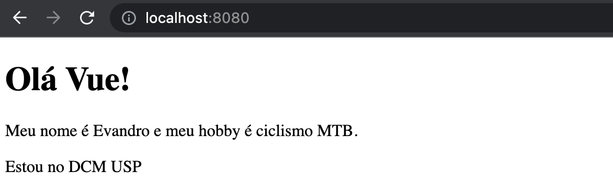App.vue é o seu único componente
Podemos reduzir o código App.vue para ser o único componente da página. Veja e execute a alteração abaixo para testar.
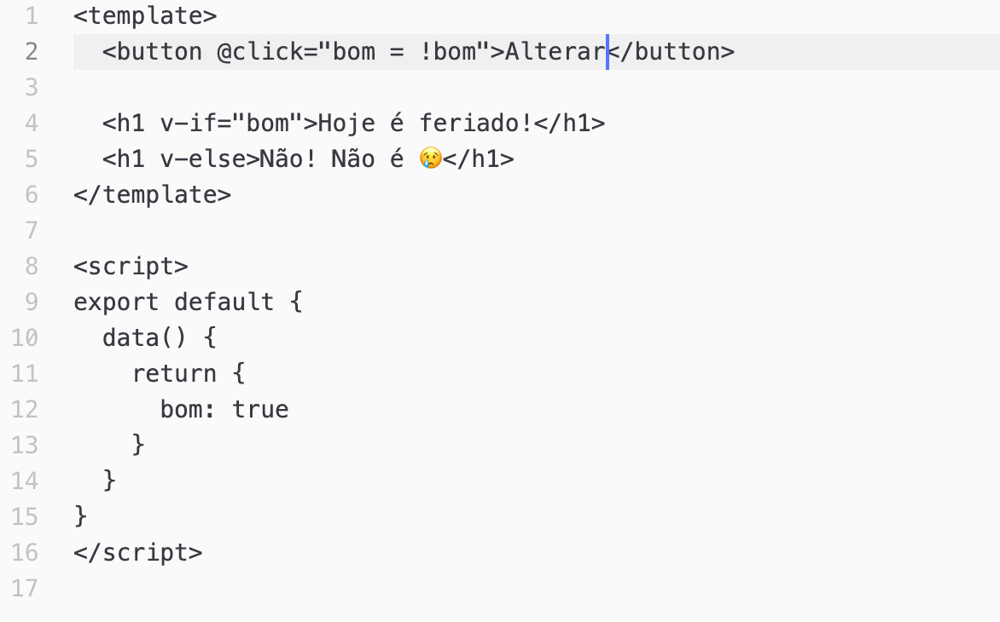O resultado da página dinâmica pode ser visto nas duas imagens a seguir:
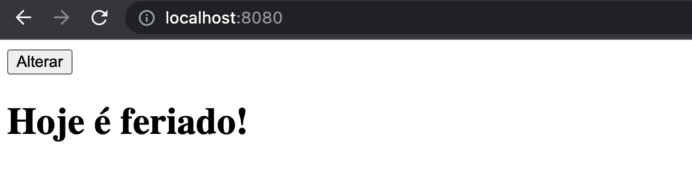 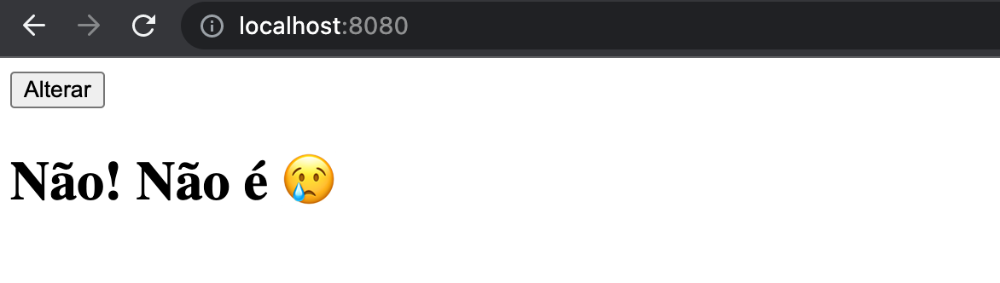Lyfe cycles hooks
Cada instância do componente Vue passa por uma série de etapas de inicialização quando é criada, por exemplo:
- ela precisa configurar a observação de dados,
- compilar o template,
- montar a instância no DOM, e
- atualizar o DOM quando os dados forem alterados.
Ao longo do caminho, um componente também executa funções chamadas Lyfe cycles hooks que possibilitam aos usuários a oportunidade de adicionar seu próprio código em estágios específicos do ciclo de vida do componente.
Em outras palavras, um hook seria um ponto da aplicação em que o programador pode intervir na execução da página de uma forma simples. Seria como se o Vue desse, por exemplo, uma permissão de execução de alguma tarefa antes de mostrar a div para o usuário. Se o programador desejar intervir neste ponto para, por exemplo, carregar alguns registros de um banco antes, esses hooks possibilitam essa intervenção.
Esses "ganchos" podem ser chamados em diferentes fases do ciclo de vida da
instância de um objeto componente. Os hooks mais conhecidos
e ais usados são
Na página da Vue temos uma imagem que retrata o ciclo de vida de uma instância de um componente. Estude essa figura.
Lyfe cycles hooks na prática
Nesta seção iremos trabalhar com dois componentes: 1) o primeiro é o já utilizado PrimoComp.vue para testarmos o "binding", já o 2) é um componente novo, LifeCycle.vue, que mostra pelo navegador e pela console, as etapas de criação de um componente. Veja e replique esse novo componente como no código abaixo:
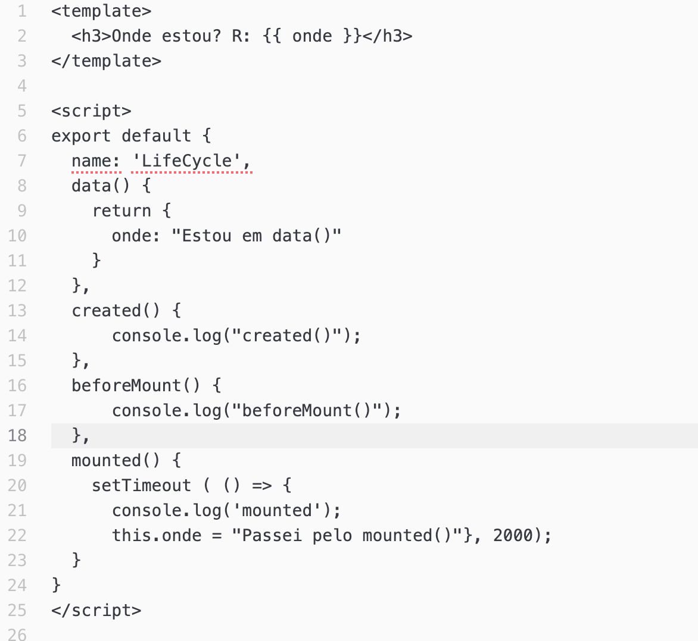Sabemos que para ativarmos o novo componente, LifeCycle.vue,
precisamos importá-lo e chamar sua execução pelo App.vue.
Veja a nova versão do App.vue abaixo:
Esses dois códigos atuando conjuntamente geram, ao final, um resultado similar ao mostrado na figura abaixo:
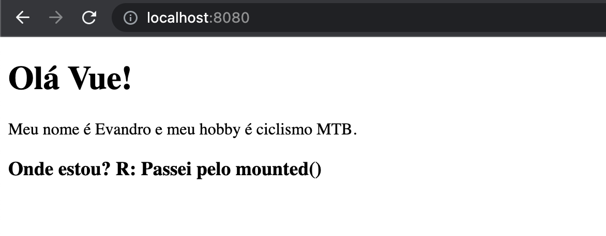Lembrem-se de visualizar os estágios de acontecimentos pela console.
Tente verificar como ocorre o chamado para updated()
Hierarquia de componentes
Neste estudo vamos tratar de componentes hierarquizados no conceito
de DOM que foi apropriado pelo Vue. Iremos criar dois componentes, um
dependente do outro.
Vamos começar com o primeiro componentes,
chamado aqui de AutoDesc.vue:
Para usarmos esse componente novo temos que alterar o App.vue.
Vejamos como ficaria esse código:
Códigos estes que irão gerar uma tela semelhante a esta abaixo:
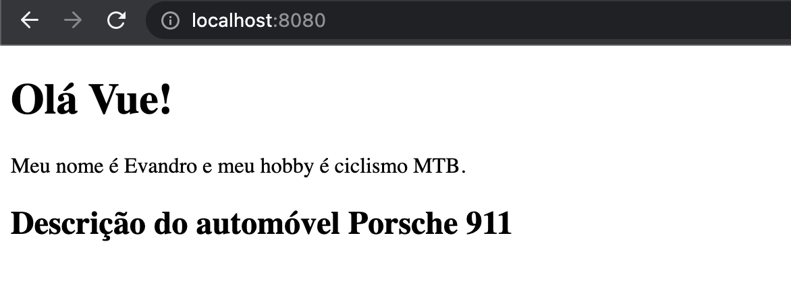Pois agora iremos completar a descrição do automóvel inserindo um
novo componente com uma lista básica de características deste carro.
Este é o código do novo componente, aqui chamado de InfoDesc.vue.
Notem que a base estrutural de declaração de um componente é sempre a mesma, ou seja, temos a porção template, a script, o export com o nome do componente, o campo de dados, eventualmente o campo de métodos e por aí segue.
Reparem também que nomeamos esses componentes sempre com "nomes duplos" (quase). Isso é uma exigência de Vue para não conflitar com possíveis criações de novos rótulos HTML com nomes similares.
A grande alteração ocorre agora que vamos alterar o componente AutoDesc.vue para ter o componente de descrição, o InfoDesc.vue como vinculado a este componente AutoDesc.vue. Cnsiderando a hierarquia DOM, InfoDesc.vue será filho de AutoDesc.vue.
Veja AutoDesc.vue alterado na imagem abaixo:
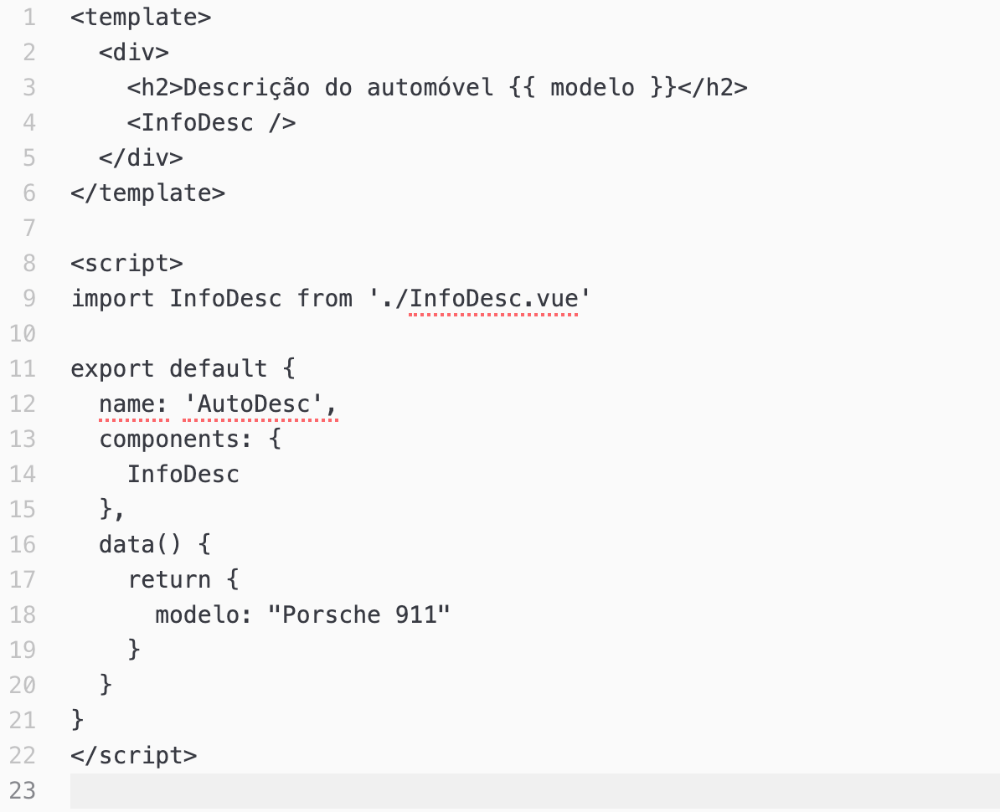Reparem nas linhas 4, 9, 13 e 14.
Reflexões
Considerando a construção do App.vue e que ele permanece inalterado, podemos perceber que este também é um componente Vue, aliás é a raíz da árvore de componente. Descende dele agora os componentes PrimoComp.vue, CarDesc.vue e, deste último descente InfoDesc.vue. Temos assim uma árvore de componentes, como no DOM.
Outra consideração importantíssima é que a criação de um componente específico normalmente deve estar associada à reutilização de software, neste caso, de componentes.
Reaproveitando componentes
Vamos agora ampliar nossa página incluindo um formulário que poderá, na característica de componente (mesmo que simples), ser reutilizado por outras aplicações.
Nosso objetivo é criarmos componentes novos para que a página tenha a seguinte aparência final:
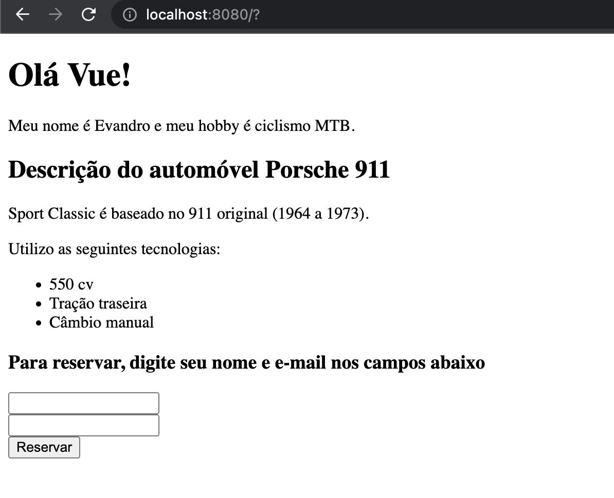Vamos dividir esse formulário em componentes e armazená-los num diretório
à parte chamado forms.
São estes os dois componentes que criaremos:InputText.vue e
SubmitText.vue.
Vejamos os seus códigos fonte abaixo. Primeiro o InputText.vue:
E agora o SubmitText.vue:
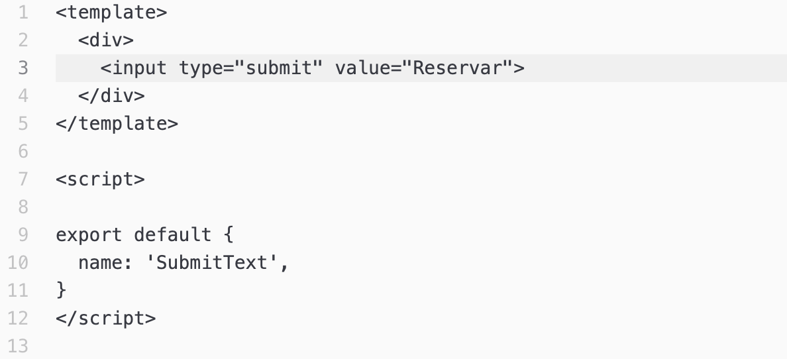Um terceiro componente é obrigatório nesta configuração pois este irá abrigar os dois componentes anteriores. Este componente será o FormCar.vue, como decrito na imagem abaixo:
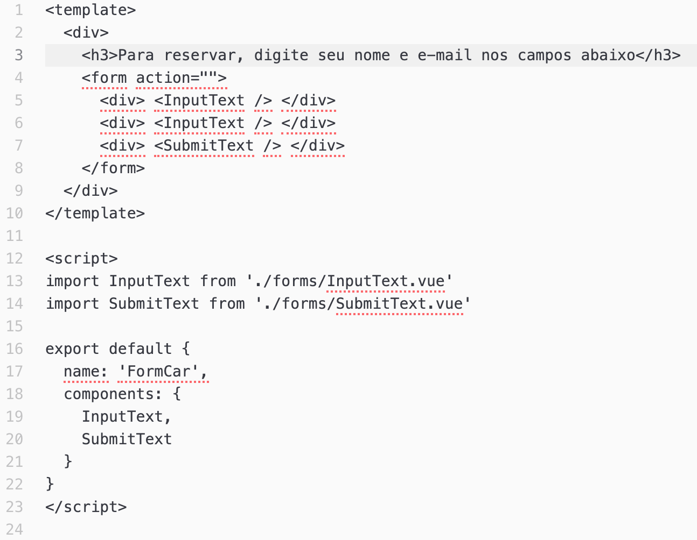Este último ficará na pasta components juntamente com AutoDesc.vue.
Resta-nos agora alterar o componente AutoDesc.vue para acomodar o novo componente FormCar que é "pai" de InputText.vue e SubmitText.vue
.
Assim encerramos nossa introdução ao Vue.
A última versão destes exemplos acima pode ser vista nesta página do GitHub.
FIM de Vue!